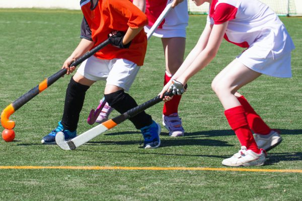
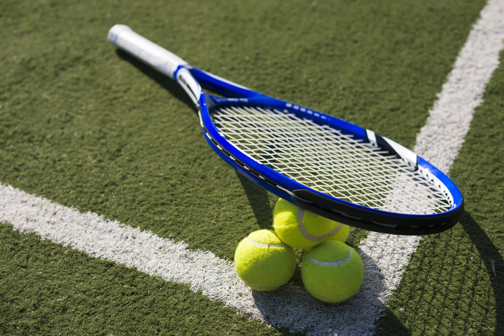
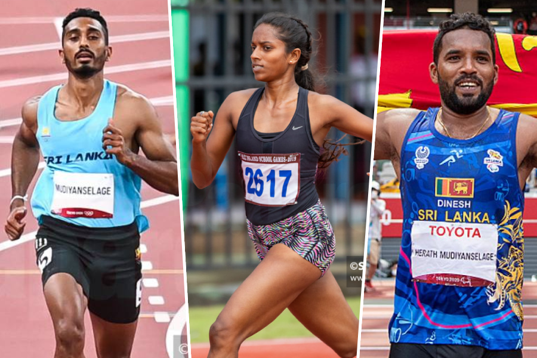
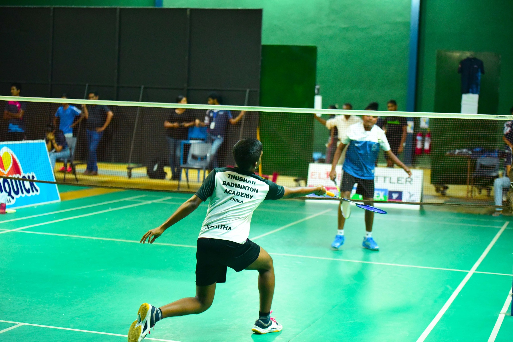
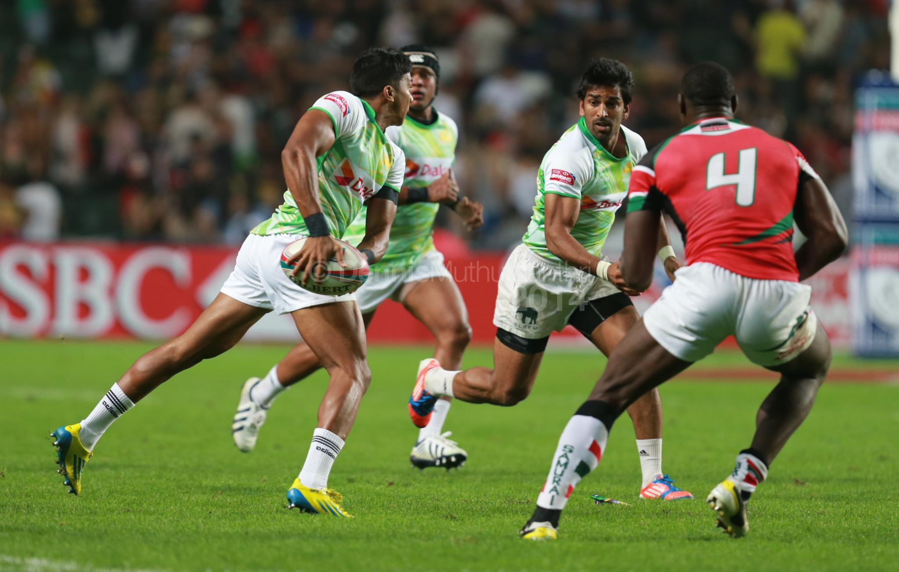
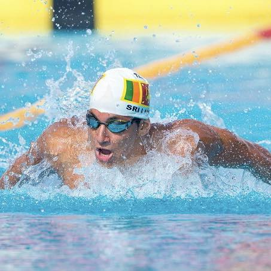

Discover the World of Sports
Sri Lanka boasts a rich tradition of sports that unites communities, builds character, and inspires excellence. At Legacy Sports Academy, we celebrate this vibrant culture by encouraging players to explore their potential in popular and professional sports.
Popular Sports in Sri Lanka
- Cricket - The heartbeat of the nation.
- Rugby - A high-energy sport enjoyed by many.
- Volleyball - Sri Lanka's national sport.
- Swimming - Ideal for fitness and recreation.
Our Featured Sports
Chess
Develop strategic thinking, problem-solving skills, and mental agility through this timeless game. Sri Lanka has a growing community of chess enthusiasts competing at national and international levels.
Hockey
Master teamwork and coordination as you play one of the most exhilarating field sports. Hockey is gaining momentum in Sri Lanka, and we aim to nurture future stars in the game.
Tennis
Learn discipline, precision, and resilience as you excel in this prestigious sport. Tennis provides opportunities for players to compete locally and internationally.
Athletics
Build endurance, speed, and strength while competing in track and field events. Athletics has produced many national champions representing Sri Lanka globally.
Badminton
Sharpen reflexes, agility, and focus in this fast-paced racquet sport. Badminton offers competitive opportunities and promotes physical fitness.
Rugby
Develop strength, agility, and teamwork while engaging in the dynamic sport of rugby. Known for its fast-paced action and strategic gameplay, rugby has become one of Sri Lanka's most celebrated team sports. The country boasts a rich history in rugby, producing skilled players who have represented Sri Lanka in prestigious tournaments across Asia and beyond.
Swimming
Swimming enhances fitness, builds endurance, and promotes relaxation. In Sri Lanka, it thrives as a sport and leisure activity, fostering discipline and strength. The nation has produced skilled swimmers excelling in regional and global competitions.
Why Choose Sports?
- Improves physical and mental health.
- Builds discipline, teamwork, and leadership skills.
- Offers opportunities for local and international recognition.
- Opens pathways to rewarding career prospects in sports coaching, management, and more.
- Strengthens community connections and promotes lifelong friendships.